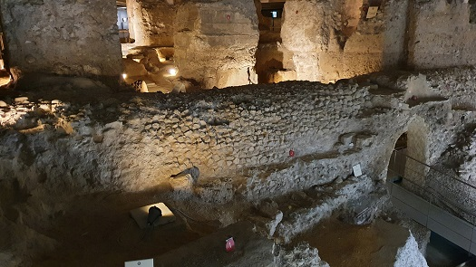
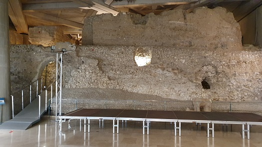
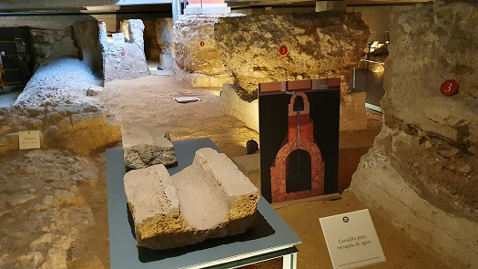
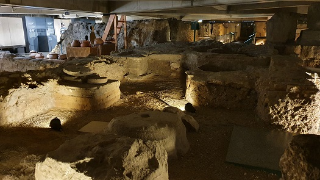
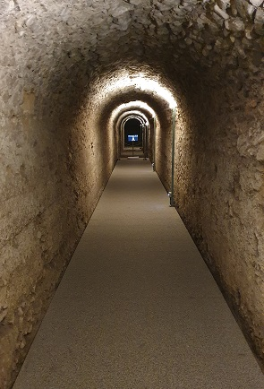
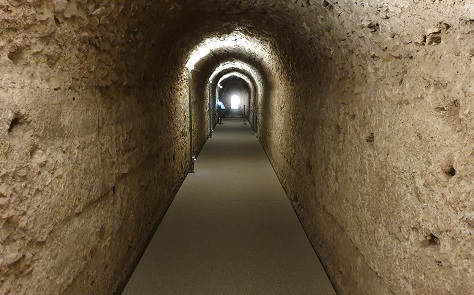

|
FORO
El Museo del Foro de
Caesaraugusta alberga los vestigios arqueológicos de un área comercial y
tuberías de agua potable, una cloaca y muros de tiendas de la época del
emperador Augusto.
De época de Tiberio se conservan restos del foro de la ciudad, con las
cimentaciones de una parte del pórtico, sus locales anexos, una gran
cloaca y los canales pluviales.
Se conoce casi en su totalidad la planta de todo el recinto. El
emplazamiento habitual del foro se situaba en el cruce entre las dos
vías principales de la ciudad, el cardo y decumano máximo, pero en el
caso de Caesaraugusta está ubicación se desplazó hacia el río uniéndose
a las instalaciones del importante puerto fluvial de la ciudad.
El
Foro era el
centro neurálgico de la vida en una ciudad romana. El recinto
del foro se organiza a partir de un gran espacio abierto, rodeado de
uno o varios pórticos circundantes, en torno al cual se distribuyen
los edificios más significativos: la Curia, la Basílica, y el Templo
principal de la ciudad. Junto a ellos están las tabernas, locales
dedicados a usos comerciales, y seguramente habría otros edificios
relacionados con la administración. Este conjunto monumental se
completa con diversos elementos ornamentales de los que en el caso
de Caesaraugusta conocemos algunos a través de su
representación en las monedas de la ciudad.
|
 |
 |
|
|
|
|
 |
 |
|
|
|
|
 |
 |
|
|
|
|
El recinto del foro
desde el momento de su fundación, en época de Augusto, se adaptaba a las
irregularidades del terreno, con notables desniveles y pendientes
pronunciadas hacia el río. Sin embargo, la excesiva humedad y las crecidas
del nivel del río hicieron necesaria su reforma treinta años más tarde, en
época de Tiberio. La actuación consistió en nivelar el terreno con
diversas capas de tierra y grava, y en construir una nueva red de cloacas
para mejorar el saneamiento y drenaje. |
Sobre esta nivelación
se construyó un gran conjunto de unos 33.000 m2, del que
actualmente se conservan parte de los dos pórticos y tabernas que cerraban
el conjunto por el lado oeste, un gran edificio, en el ángulo sur
occidental, posiblemente un aula de planta basilical, así como un edificio
monumental en la esquina noreste, que ponía en comunicación el foro con
las instalaciones portuarias.
|
Sin embargo, se
conoce casi en su totalidad la planta de todo el recinto. El emplazamiento
habitual del foro se situaba en el cruce entre las dos vías
principales de la ciudad, el cardo y decumano máximo, pero en el
caso de Caesaraugusta está ubicación se desplazó hacia el río
uniéndose a las instalaciones del importante puerto fluvial de la
ciudad.
En mayo de
2019, nuevos vestigios romanos, del siglo I, han aparecido en la
calle San Valero, próxima a la plaza de La Seo de Zaragoza, donde se
encuentra el Museo del Foro Romano |
|